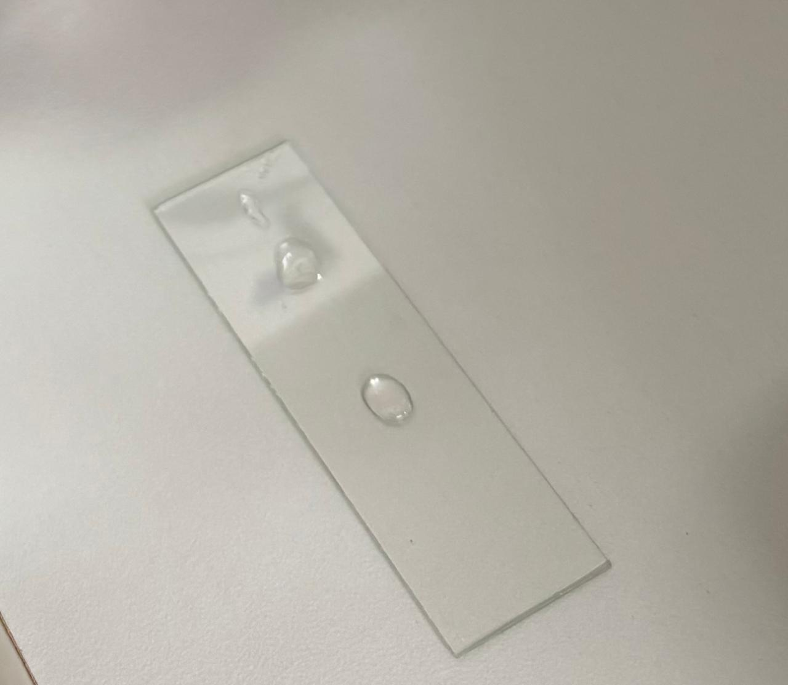
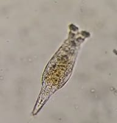
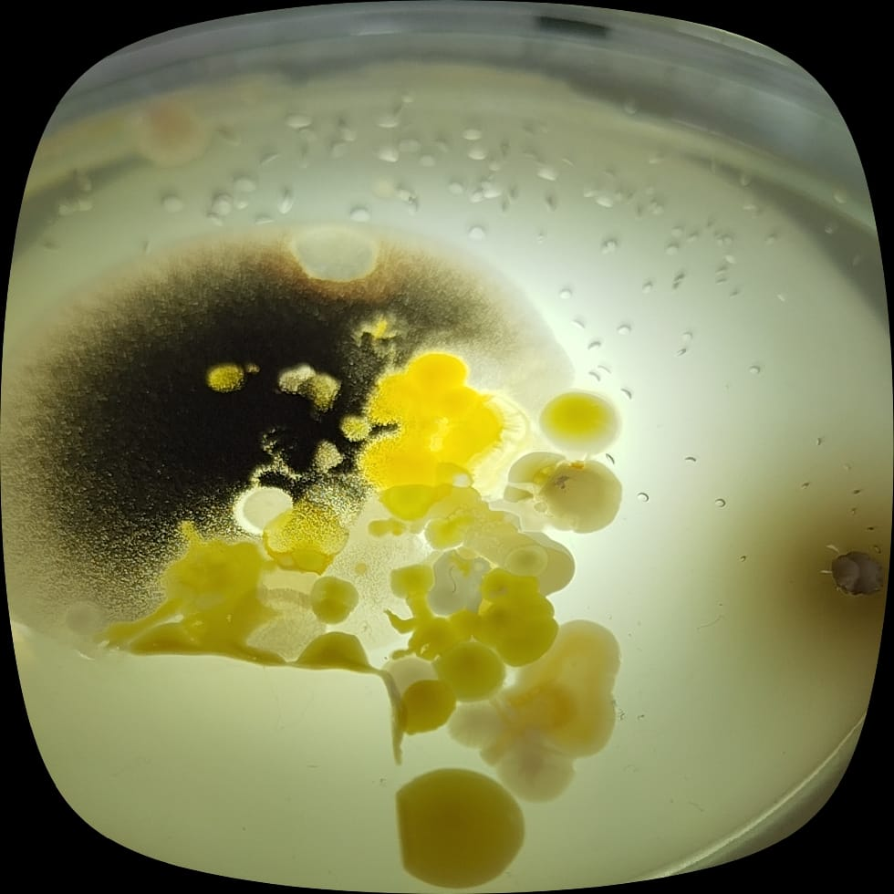
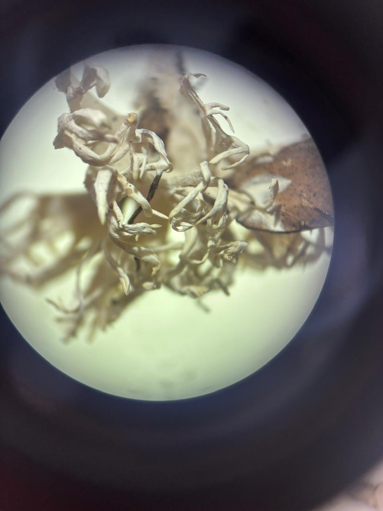

A olho nu os protozoários nao sao visiveis, sendo impossivel sua observçao sem um microscopio. A agua apesar de algumas impuresas se mantinha com sua cor trasparente, mas sou cheiro mudou, mudou para um cheiro forte e desagradavel.

Agora com um microscopio foi possivel observar vida. A agua do meu grupo, infelizmente, no foi possivel encontrar protozoarios, mas tinha a presenca de algumas impurez foi de legal observaçao. Na imagem dois e possivel observar um protozoario, o famoso "Berinjela", nele e possivel ver um formato irregular e quase trasparente, ele se movimentava se encurtando e se esticando, o movimento ameboide.
| Característica | Monera | Protoctista | Fungi |
|---|---|---|---|
| Imagem observada |
 |
 |
|
| Tipo celular | Procarionte | Eucarionte | Eucarionte |
| Número de células | Unicelular | Uni ou pluricelular | Maioria pluricelular |
| Alimentação | Autótrofa ou heterótrofa | Autótrofa ou heterótrofa | Heterótrofa |
| Movimento | Alguns possuem flagelos | Muitos se movimentam | Não apresentam |
| Exemplo observado | Bactérias | Protozoários ou algas | Fungos microscópicos |
Nessa imagem pode ser observado organismos microscópicos muito pequenos e amarelos, apresentando diferentes formatos e agrupamentos.
Nessa observação foi possível perceber organismos maiores e alguns apresentavam movimentação no microscópio.
Aqui podem ser observadas estruturas semelhantes a fios, formando partes do corpo dos fungos.